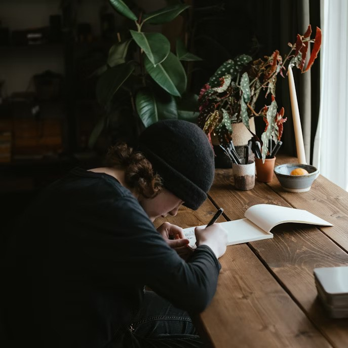

Фритрек и нулевой спринт: Подготовка к работе
Ожидание
Это было самое начало пути. На этом этапе важно было проникнуться основами и настроиться на учёбу. И, возможно, подумать, как новые знания могут повлиять на ваше будущее.
После напряжённого пути реанимационного медика я почувствовала потребность в тихой, осознанной работе - так начался мой путь в IT. Пройдя профориентацию в Яндексе, я впервые всерьёз задумалась: кто такой фронтенд-разработчик? Это увлекло меня настолько, что я сразу решила погрузиться глубже и купить курс.